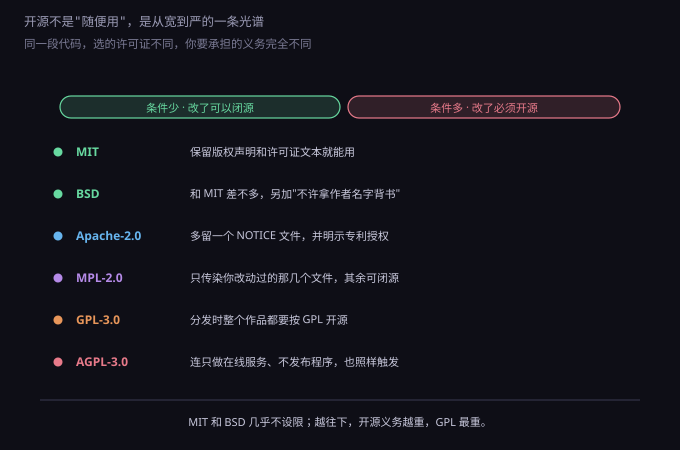
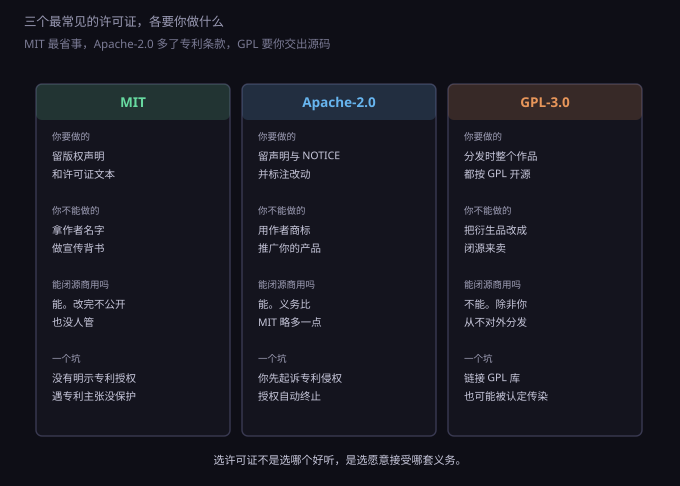
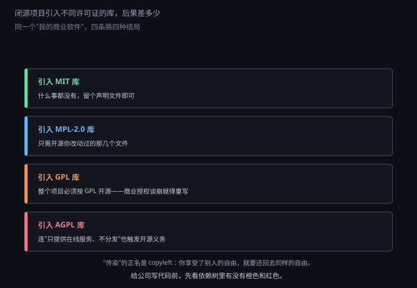

约 0.33 万字 · 3 张图 · 一份授权书，三种义务强度
先纠正一个几乎所有人都犯过的错：在 GitHub 上看到一个没有 LICENSE 文件的仓库， 觉得"代码公开了就是公共的"，复制过来用。
法律上不是这样。著作权是自动取得的（上一节刚讲过）， 公开源代码只是让源代码"可见"，没有让渡任何权利。 没有许可证的仓库，默认状态是保留所有权利—— 你可以看、可以学习，但不能复制、不能修改、不能分发，更不能商用。
所以 LICENSE 文件不是装饰，它是这份代码唯一合法的使用许可。 作者忘加了，就意味着他（无意中）什么都没授权给你。
反过来，一旦加了许可证，授权的范围就由那份文本决定。 开源许可证做的事情可以概括成一句话：允许你复制、修改、分发， 但附加若干条件。不同许可证的差别，全在"附加条件"上。
按附加条件的强度，主流许可证能排成一条线。左边几乎不设限，右边要求你把成果也交出来。

这条线可以切成三段。
第一段是宽松型，代表是 MIT、BSD、Apache-2.0。 它们的核心义务只有一条：保留原作者的版权声明。 你可以闭源、可以商用、可以改得面目全非，改完不公开也没人管。 差别只在小地方：BSD 多一条"不许拿作者名字给你的产品背书"， Apache-2.0 多要求保留 NOTICE 文件，并额外给了一份专利授权。
第二段是弱 copyleft，代表是 MPL-2.0 和 LGPL。 copyleft 这个词的意思是"用版权来保证自由"：我允许你改， 但你改完之后不能把门关上。弱的地方在于范围是文件级的—— MPL 只要求你改动过的那几个文件开源，你自己新写的文件可以闭源。
第三段是强 copyleft，代表是 GPL-3.0 和 AGPL-3.0。 范围变成整个作品：只要你的程序构成了 GPL 代码的衍生作品， 分发时整个程序都得按 GPL 开源。AGPL 更狠一步，把"通过网络提供服务" 也算作分发的一种形式。
这里要强调一句：这三段都是"开源许可证"，都符合开源定义。 左边不代表"更开源"，只是"要求更少"。选哪个，取决于作者想让自己的代码传播得多远、 以及愿不愿意让别人拿去闭源赚钱。
实际项目里，九成以上遇到的是这三个：MIT、Apache-2.0、GPL-3.0。 把它们的义务逐条列出来，比记名字有用。

MIT 是最短的一份，正文只有一段话。核心是"保留版权声明和许可声明"， 其余随你。它能流行不是因为法律上多精妙，而是因为短到不用请律师看。 缺点是它没有明示专利授权——如果原作者手握相关专利， MIT 并没有明确说"我授权你用我的专利"，遇到专利主张时你的位置比较尴尬。
Apache-2.0 补的正是这个洞。它明确写了一条专利授权： 贡献者授予你使用其专利的许可。但相应地也有一条"专利报复"： 如果你就这个软件发起专利诉讼，你的专利授权自动终止。 另外它要求保留 NOTICE 文件、标注你改动过哪些文件。 所以 Apache 项目更"企业友好"——大公司愿意用，就是因为专利条款写得清楚。
GPL-3.0 的义务最重。它的触发条件是"分发"： 一旦你把基于 GPL 代码的程序发布出去（卖盘、提供下载、预装到硬件里）， 你就必须向接收者提供完整的对应源代码，并且这些代码也得按 GPL 授权。 GPLv3 还加了两条现代条款：反 Tivoization（不能把软件锁在硬件里不让用户改）、 以及更明确的专利授权。
顺便说清一个常见困惑：GPL 不等于"不能卖钱"。 GPL 明确允许你收费，只是不能阻止别人拿到源码后免费再分发。 所以 GPL 的商业模式通常是"卖服务、卖支持、卖商业授权"， 而不是卖那份二进制本身。
前面反复出现一个词：分发。这是理解 copyleft 的钥匙。
GPL 的义务只在分发时触发。也就是说，如果只是自己内部使用、 或者把软件部署在自己的服务器上对外提供服务、但不把程序本身交给用户， 传统 GPL 并不要求你开源。这就是著名的"SaaS 漏洞"—— 一大批公司靠它把 GPL 代码包成云服务，一行源码都不用公开。
AGPL 就是为了堵这个洞而生的。它在 GPL 基础上加了一条： 如果用户通过网络与这个程序交互，你也必须向他们提供源代码。 所以做 SaaS 的产品，看到 AGPL 要比看到 GPL 更警惕。

图里第四行的场景值得单独说：如果你的商业软件是 SaaS， 引入一个 AGPL 库，哪怕你从不给客户发安装包，只要客户能通过网络用上这个功能， 你就欠他们一份完整源码。这条对做后端的人是实打实的雷。
还有一个长期争论的问题：链接算不算衍生作品。 业界比较通行的理解是：静态链接（把库代码编进你的可执行文件）几乎肯定构成衍生作品； 动态链接（运行时加载 .so / .dll）争议较大，自由软件基金会认为特定情况下也算。 最保险的判据不是"怎么链的"，而是你的程序是否依赖它才能工作、 以及两者结合得有多紧。
所以对闭源商业项目，稳妥的做法是：GPL/AGPL 的代码只通过独立进程 + 网络调用的方式使用 （比如单独跑一个服务，你的程序通过 HTTP 调它），并且确认这种边界在你们法务看来站得住。 拿不准的时候，换一个 MIT 的替代库，成本通常远低于事后重写。
在这条光谱上还有个常被忽略的位置：LGPL。 它是 GPL 的"宽松版"，专门为库设计的。核心让步是： 如果你的程序只是动态链接 LGPL 库，你自己的代码可以不开源； 但你必须保证用户能替换掉那个库（比如提供 .so 而不是静态编进去）。 Qt 就是用 LGPL 的典型——闭源商业软件可以用它，前提是别把库焊死在自己的二进制里。
光谱之外还有一类要特别小心：源码可见，但不是开源。 比如 SSPL（MongoDB 用过）、BUSL（HashiCorp 用过）、 以及各种"仅限非商业使用"的自定义协议。 它们的共同点是：代码放在 GitHub 上，你能读能改，但不符合开源定义—— 限制商用、限制提供服务、或者要求你把自己的整个服务栈也开源。 近几年不少数据库从开源改成这类协议，原因就是云厂商拿去做托管服务赚得比自己还多。 用之前一定看清楚 LICENSE 里有没有 "non-commercial" "competing service" 这类词。
这是最容易被忽略的一层：不同许可证之间可能互相不兼容。 不兼容的意思是，把两段代码合到一起之后，你无论怎么分发都违规。
几个要记住的组合：
许可证文本里那句 "or later" 很关键。 "GPL-2.0-only" 意味着只能用第二版；"GPL-2.0-or-later" 意味着你可以选择用第二版或任何更高版本， 后者给下游留了升级的口子。自己选许可证时，这个问题要想清楚： 选了 only，将来想升级到 v3 就难了。
如果你要开源自己的东西，选择逻辑其实很简单，三句话能覆盖大部分情况。
想让别人尽量方便地用，选 MIT。 工具库、脚手架、小工具，用 MIT 传播最快。 代价是别人可以拿去闭源卖，你拿不到任何回报，只有署名。
想顺便解决专利问题，选 Apache-2.0。 涉及企业环境、需要明确专利授权的项目，Apache 更合适。 多一个 NOTICE 文件的麻烦，换来的是法务层面的清楚。
想让衍生品也保持开源，选 GPL-3.0 或 AGPL-3.0。 桌面软件、需要防止被闭源套壳的项目，用 GPL； 做服务端、想防住云厂商直接拿去卖 SaaS 的，用 AGPL。
还有一条被低估的建议：选最普通的那个。 自己写一份"开源协议"、或者改几个字拼一个变种，结果是没有律师愿意为它背书， 企业法务看到非标准许可证会直接拒绝使用。开源许可证的价值一半在文本， 一半在"大家都知道它是什么意思"。
至于"双许可"（同一个项目既提供 GPL 版又卖商业授权）， 这是 MySQL、Qt 这类项目的做法。它成立的前提是你拥有全部版权—— 一旦接受了外部贡献者的代码而没有签贡献者协议（CLA），你就没有权利单方面改授权了。 这件事要在项目开始时就定好，事后补非常麻烦。
落到日常开发，合规其实只要三件事，但三件都必须做。
第一，看 LICENSE 文件，不看 README。 README 里写"自由使用"没有法律效力，LICENSE 才是授权文本。 有些项目 README 说 MIT，仓库里放的却是 GPL，以 LICENSE 为准。 还有的项目压根没有 LICENSE——那就当"不能用"处理。
第二，扫依赖树。 你直接引入的库可能只有五个，但它们的依赖加起来可能两百个。 每个包管理器都有对应工具：Node 的 license-checker、 Python 的 pip-licenses、Java 的 license-maven-plugin， 商业方案有 FOSSA、ScanCode。跑一次，把 GPL 和 AGPL 标出来。
第三，留一份第三方声明文件。 把所有依赖的名称、版本、许可证、版权声明汇总成一个文件， 随产品一起发布。这既是 Apache-2.0 的硬性要求， 也是万一被追问时能立刻拿出来的东西。
给自己项目加许可证反而是最简单的：在仓库根目录放一个名为 LICENSE
的纯文本文件，内容是该许可证的完整原文（不是链接），
再在 README 末尾写一行 "Released under the MIT License"。
GitHub 新建仓库时可以直接选，选完会自动生成这个文件。
不要只在 README 里写一句"本项目采用 MIT 协议"——那样授权是不完整的。
这三条做完，剩下的风险主要是"许可证变更"： 某个库从 MIT 改成 SSPL 或者干脆闭源（Elasticsearch、Redis 都发生过）。 对策不是不用，而是锁定版本—— 已经发布的旧版本仍然按旧许可证授权，你可以继续用那个版本。
几乎所有开源许可证里都有一段全大写的免责声明，翻译过来是： 本软件按"原样"提供，不附带任何担保， 作者不对使用后果负责。
这句话的现实含义是：你用的开源库出了安全漏洞、导致数据泄露、造成损失， 作者不赔。哪怕漏洞是他自己写出来的。责任在你，因为选择了用它。
所以"用了开源"不等于"省了责任"。真出了事故，客户找的是你， 不会去找那个在 GitHub 上写库的人。这也是为什么商业项目要做依赖审计和版本更新—— 你承担的是整条供应链的风险，而供应链上每一环都写着"我不负责"。